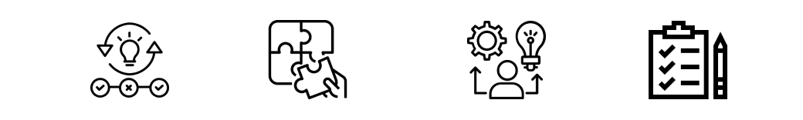

Conclusiones
Conclusión grupal
Nuestra práctica ha llegado a su fin y hemos logrado completarla de la forma en la que imaginábamos que se daría, dejándonos conformes con el proceso de la experiencia y logrando evidenciar las distintas etapas que tuvo, identificando qué queríamos que los analistas comprendan, conozcan y puedan hacer. Logramos planificar las actividades para que los analistas puedan dar cuenta de los aprendizajes alcanzados y nosotros poder comprobar comprobar lo aprendido durante la propuesta de formación y las actividades. Si bien tuvimos que ajustarnos, parar y volver a pensar sobre la implementación dadas las limitaciones en cuanto a herramientas tecnológicas, supimos acomodar todo el material instruccional y diseñar un EVA y las actividades con los recursos con los que contaba la empresa. A lo largo de la práctica pudimos identificar la importancia de la planificación pedagógica a la hora de interactuar con los destinatarios teniendo en cuenta la logística de husos horarios tan diferentes, logrando adaptarnos y dirigir las actividades en el proceso de formación observando el impacto que tenía en el desarrollo de los analistas. Adicionalmente, otros aprendizajes significativos que tuvimos fueron, los del tiempo real que lleva el diseño de material instruccional cuando el mismo se trata de contenido técnico específico, ésto nos llevó a estirar bastante el tiempo planificado. Y otro fue, durante el desarrollo de las actividades prácticas, ver cómo los analistas rápidamente se ubicaron en el rol de formador-alumno en un ida y vuelta intercambiando y socializando las soluciones a las que habían llegado cada uno en ejercicios similares, construyendo nuevos conocimientos ajenos a lo planteado inicialmente en la actividad. Todas estas experiencias, esperadas o no tan esperadas, nos permitieron poner a prueba también nuestra capacidad de adaptación en cuanto a los recursos, la planificación, la ejecución, la necesidad de alternativas y el ejercicio del acompañamiento pedagógico dejándonos más que felices por poder haber transitado el mismo con muy buenos resultados y buena retroalimentación por parte de los participantes y el líder técnico del área involucrada.
Conclusiones particulares:
María Teresa Cánovas La Mattina:
Mi experiencia ha sido haber podido conocer un tema que era desconocido totalmente para mí como es el onboarding, una etapa inicial en la cual debe aprender muchas cosas en poco tiempo y viviendo en distintos husos horarios por la distancia. Desde el rol del tecnólogo educativo intentamos y creo que inicialmente dimos respuesta a esta problemática concreta de una empresa del sector socio productivo, diseñando planificando e implementando esta wiki, como espacio virtual de aprendizaje que les permitió un acompañamiento formativo en esta etapa, más adaptado a su realidad. Ha sido un gran trabajo en el que destaco el trabajo en equipo con Ezequiel y Patricio, con las fortalezas de cada uno. También la disponibilidad de la empresa UV-Security para compartir su realidad y por recibir nuestra práctica; también destaco la mediación y el trabajo de Pato y el compromiso del personal nuevo que aprovechó lo preparado.
Ezequiel Ricca:
En lo personal esta experiencia me ha hecho vivenciar un camino lleno de diferentes emociones. Empecé con mucha incertidumbre y miedos porque desconocía totalmente tanto las tecnologías que se usaban en la empresa como el funcionamiento interno. Pero poco a poco con esfuerzo y dedicación todo empezaba a tener más y más sentido. Todo el esfuerzo se vió recompensado cuando pudimos de alguna manera ver que nuestra intervención había mejorado al menos la realidad de dos personas en la empresa. Tras haber experimentado el rol del tecnólogo educativo, hay una característica que en este caso prevaleció sobre todas las otras: la capacidad de trabajo en equipo, poder suplir nuestras debilidades con las fortalezas de nuestros compañeros. La confianza ha sido fundamental. Es imposible pensar en un TE trabajando solo hoy en día ya que las formas de trabajar, estudiar y relacionarnos son mejores si son construidas con diferentes miradas.
Patricio Briceño:
En lo personal debo decir que ésta práctica me ha permitido conocer más, a través de mis compañeros, el cómo se llevan a cabo las labores docentes, algo que me costaba dimensionar de manera real. Ésto ha sido un aporte muy grande para mí, que no vengo de la rama docente. Pero el aprendizaje más significativo que me llevo se debe a que me permitió profundizar mucho más sobre la visión y misión como tecnólogo educativo, teniendo en cuenta no solo los objetivos y el proceso formativo sino también esa mirada global, del contexto, que me permitió poder aportar al equipo ideas para que podamos sortear las dificultades y así lograr adaptarnos sin mayores esfuerzos. Como corolario de lo que sentí, me quedo muy contento con el proceso y lo aprendido en la práctica.